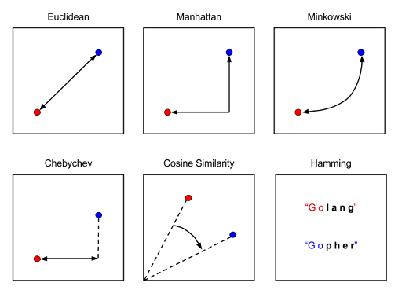
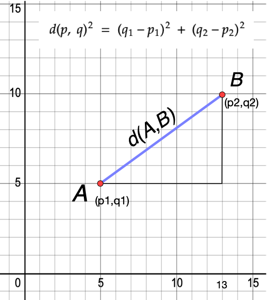
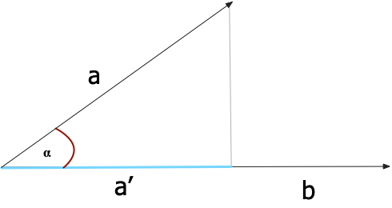
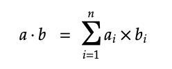
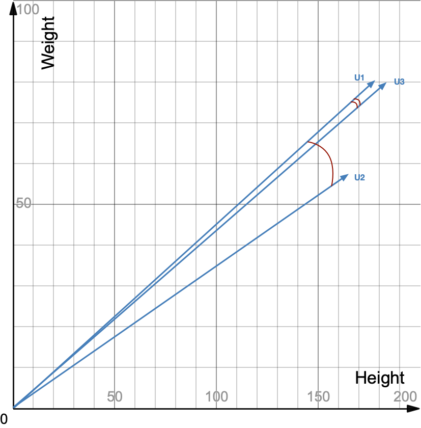
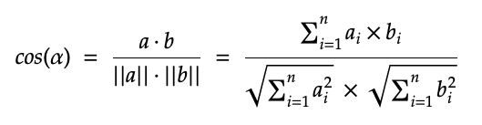

Vector similarity is based on determining how similar or dissimilar two vectors are. In order to do this consistently, there needs to be some kind of quantifiable and objective score. These scores are called Distance Metrics.
There's more than one way to determine the similarity of two vectors, thus, we can talk about multiple distance metrics. These are not just different means to the same result though, they measure different things in reality.

In this unit, we'll introduce three of the most popular distances:
- Euclidian distance
- Internal product
- Cosine similarity
Euclidian distance
The Euclidean distance is one of the most used distance metrics, and it calculates the distance between two data points on a plane.

If we expand this logic to the numerical values in a vector, we can use the same formula to calculate the distance between vectors in the two-dimensional space. Imagine that A and B are two observations from our data set, with x1, and y1 being the two features of observation A, and x2, and y2 being the two features of observation B. Calculating the Euclidean Distance would tell us how similar A and B are, and we could use this similarity to make predictions or group our observations.
The example is easily expandable to N-dimensions.
The Euclidean distance is default distance metric used by many algorithms, and it generally gives good results. Conceptually, it should be used whenever we are comparing observations which features are continuous, numeric variables like height, weight, or salaries for example, although, it should be noted that it works best with low-dimensional data and where the magnitude of the vectors is important to be measured.
Internal product
To determine similarity, the internal product looks at both angle and magnitude of vectors. It's found by projecting one vector on the other and multiplying the result with the magnitude of the second vector. Let's look at this in two-dimensional space:

How do we generalize this for the n-dimensional space? First, to apply the inner product to two vectors, they need to be of the same size (in our example we'll work with two four-dimensional vectors). Then we multiply element-wise the ordered vectors, element by element, and in the end we sum the products. The result of a dot product of two vectors is a scalar.
a = (3, 6, 1, 8)
b = (3, 2, 2, 1)
a⋅b = 3x3 + 6x2 + 1x2 +8x1 = 9 + 12 + 2 + 8 = 31
The generalized formula for this product is:

Cosine similarity
Cosine similarity is usually the first metric you would reach to, since it gives consistently good results, especially for high dimensional vector spaces. It is a good choice for use cases like document similarity, image comparison, pose comparison (in computer vision) and much more.
Differently from the internal product, cosine similarity looks only at the angle between two vectors to determine similarity. Specifically, it looks at the cosine of the angle.

In the image of three vectors in two-dimensional space above we can see that the vectors U1 and U3 have a small angle between them, which means they're more similar. U1 and U2 however have a bigger angle between their vectors, which means the vectors are less similar. Two vectors with exactly the same orientation have a cosine similarity of 1, whereas two vectors diametrically opposed to each other have a similarity of -1. Their magnitude is not of importance as this is a measure of orientation.
If we move to an n-dimensional space with vectors a and b, using the cosine measure as a similarity function, we have:

where a⋅b is the dot product of the two vectors and ||a|| is the Euclidean norm of vector a=(a1,a2,…,an): conceptually, the length of the vector. Similarly, ||b|| is the Euclidean norm of vector y. The measure computes the cosine of the angle between vectors a and b. A cosine value of 0 means that the two vectors are at 90 degrees to each other (orthogonal) and have no match. The closer the cosine value to 1, the smaller the angle and the greater the match between vectors.
If you normalize the vectors, cosine similarity and internal product give the same result, which makes the intuition behind using it as a metric very similar to internal product, but vector similarity should be chosen when magnitude doesn't play a high role in similarity.
Normalized vectors are vectors with a magnitude of 1, so to normalize a vector means to set its magnitude to one, but keep its direction. This is done by dividing each of the vector's components by its magnitude.
Summary
Congratulations! Now you master the foundations of working with unstructured data and performing vector similarity to design services based on semantic search. In the next section, we will dive into the capabilities of Redis when used as a Vector Database to automate vector similarity, get ready for Vector Similarity Search!